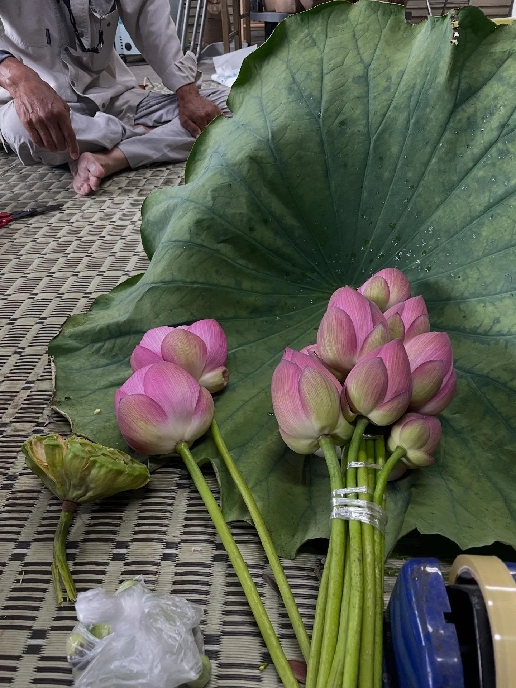
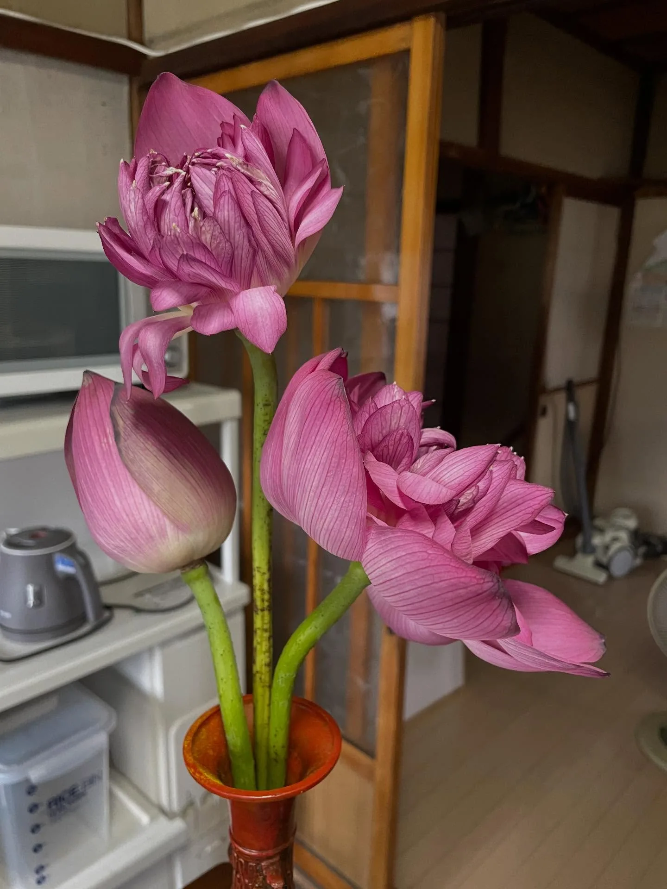
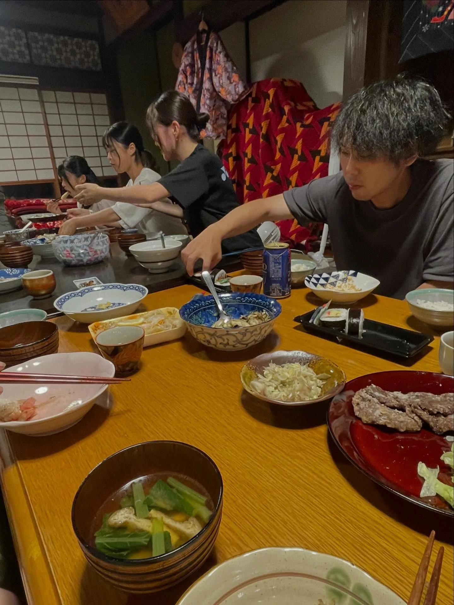
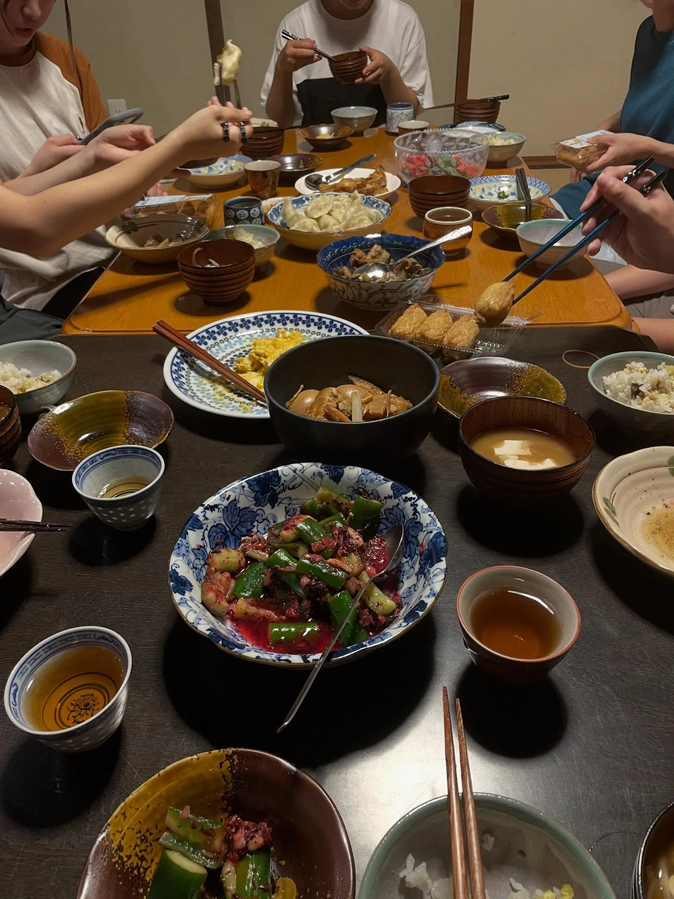
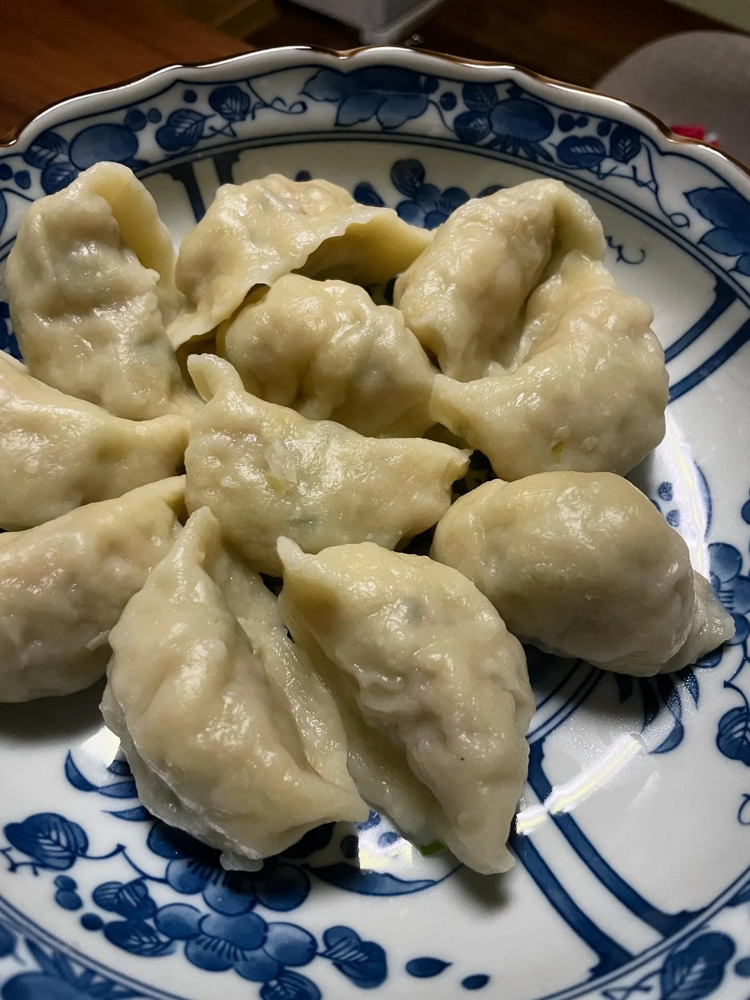
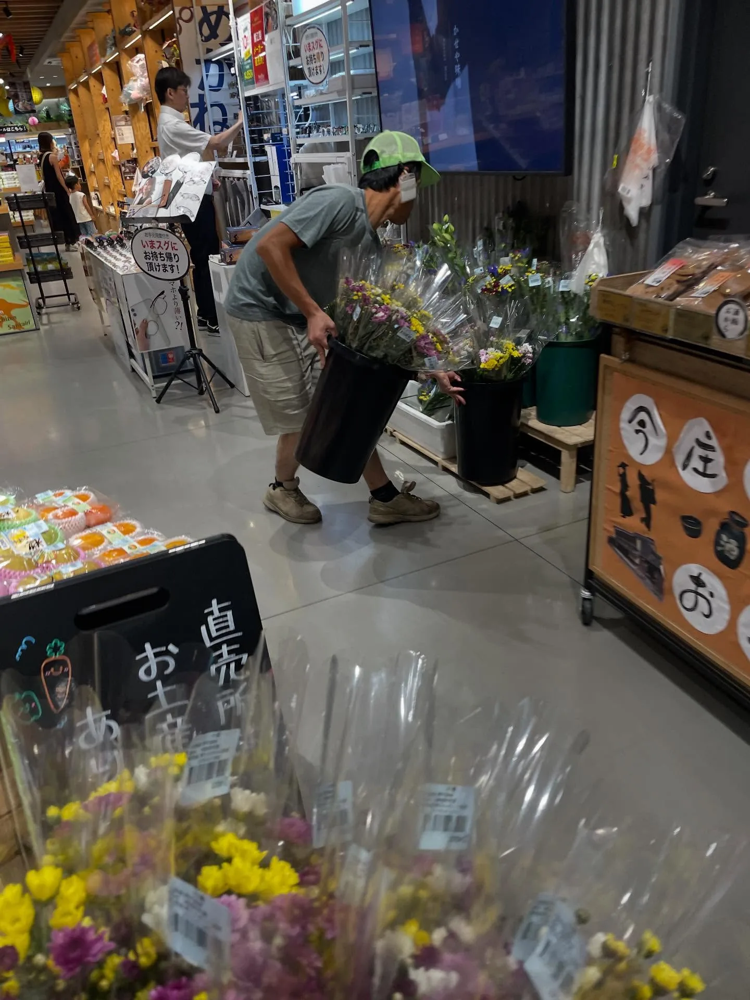
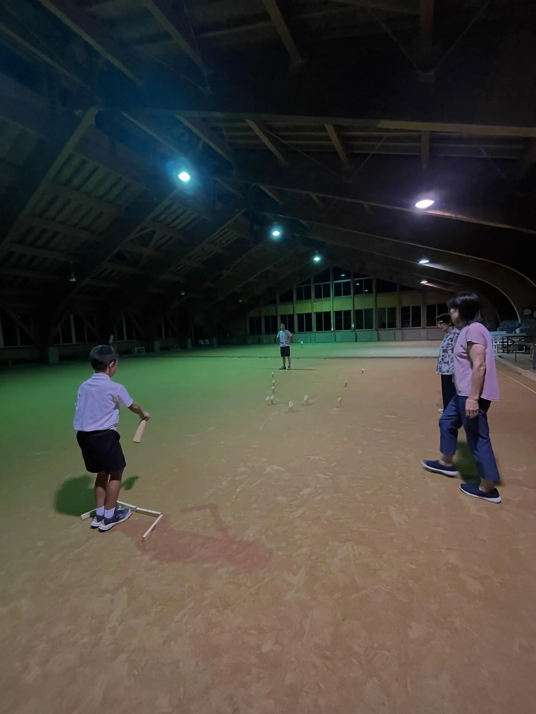
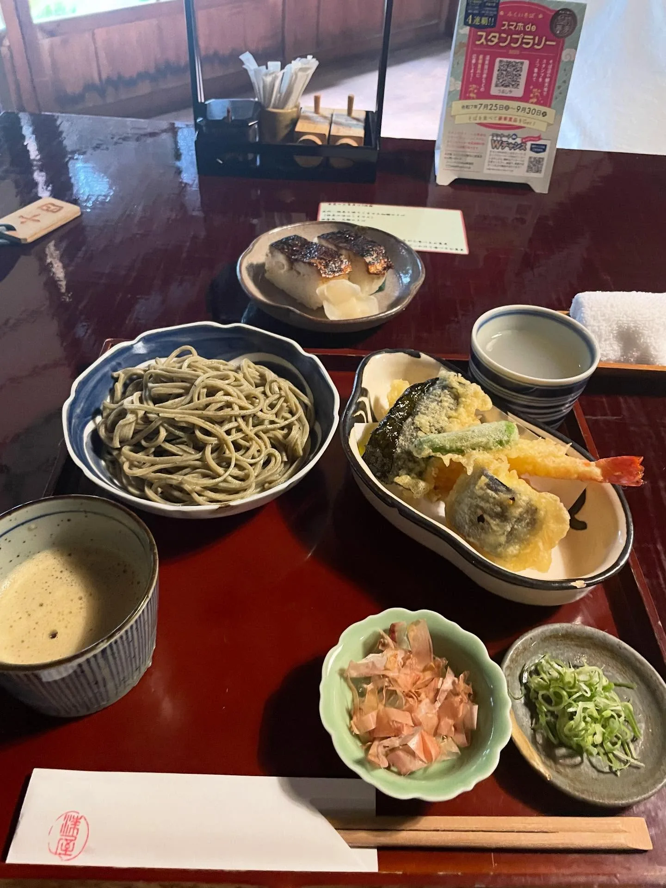
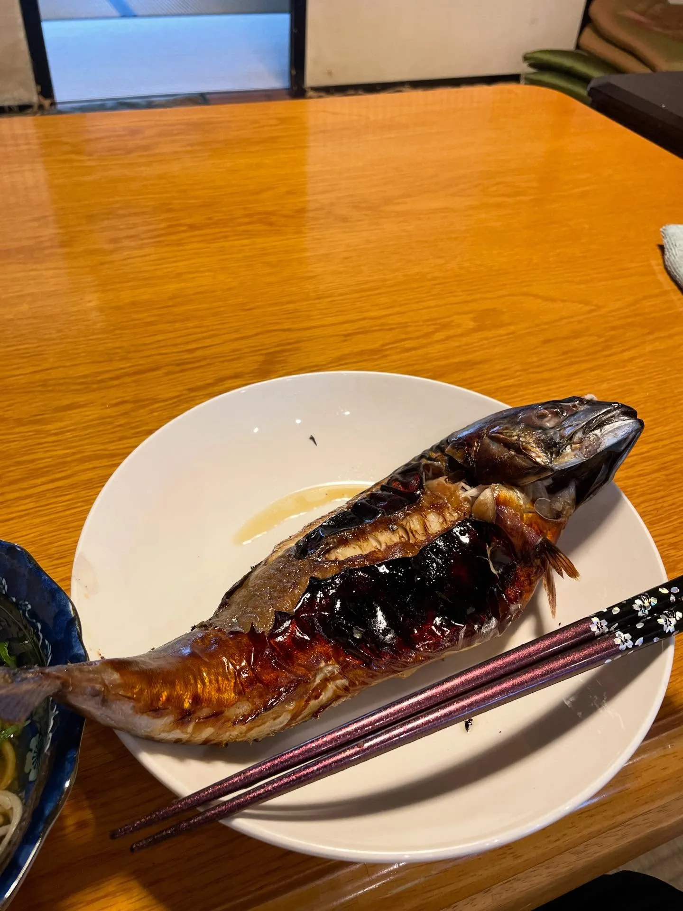

福井南越前町短居：蓮花鎮的生活、居民，與眼鏡
結束家庭旅行，我前往了福井縣的南越前町。我在 Google Map 海巡時發現這裡有個民宿「玉村屋」，接著發現他們有 Share house 可以短住，於是來到這個小鎮待了兩週。第一天晚上抵達時，我還去錯地方……麻煩了接待我的ノッチさん開車來接我。
今庄宿：北國街道上的江戶驛站
玉村屋位於曾經的北國街道上，是江戶時代的重要驛站「今庄宿」。當時我在小雨中撐著傘、因揹著登山包而有些駝著背，從微陡的小巷走入無人街道，抬頭看見路燈下清晰的細雨以及傳統建築，彷彿穿越時空的瞬間，現在都還記得。
南越前町主要由南条、今庄、河野三大區域組成。今庄是江戶時期的脇街道（次要幹道）之一──北國街道的驛站，而且屬於功能最齊全的「本宿」，有專門給貴族和官員的住宿設施，當時民營旅館多達 55 家。今庄地區還有舊北陸線隧道群（國家登錄有形文化財），河野地區則有北前船主建築群。
南条站附近的 Share house
Share house 位於南条車站走路 3 分鐘的一棟兩層樓一戶建，是玉村屋負責人之一、也是花農ノッチさん的工作室。一樓是主要工作區，二樓有兩個房間，以及一個彷彿《借物少女艾莉緹》的家的花朵乾燥室，超級夢幻！
雖然這裡是鄉下小地方，但騎腳踏車在附近亂晃，餐廳不多，超市商店倒是都很方便。這個區域其實也有不少景點，只是交通不太方便，為了吸引遊客，町內有「周遊計程車」的服務：町內指定地點每趟（單程）500 日圓，地點有海邊也有山中，最遠的要 40 分鐘……我突然很後悔當時沒有用用看這個服務 QQ。就算不租車也很方便，如果有旅伴分攤，真的便宜到哭！
備忘
- 計程車資訊可搜尋：南越前町みなこい定額タクシー
- 玉村屋：@tamamuraya
蓮花之鄉：下田採蓮、學綁花束
兩週的時間裡，仔細算起來其實經歷了不少。比如和民宿客人一起搭著另一位負責人ショーさん的車到處拜訪參觀：披薩餐廳、小黃瓜農夫、蓮花農夫；下田採了蓮花、學習綁花束；還找了正在福井東鄉協力隊工作的台灣人和我見面聊天。
也是在蓮花農夫那邊，我才發現南越前町是日本第一的蓮花產地，而且跟台南白河有締結「友好都市」的關係，2025 年也有簽訂合作備忘錄，持續有互動。鄉下地方居然還與台灣有所連結，真是不可思議！


玉村屋的晚餐：像社區客廳
比較特別的活動是，玉村屋有客人住宿的日子，會以一人一菜的形式跟大家一起吃晚餐。來的人有在附近醫院實習的學生（希望爭取更多醫療資源的町長也有一起來吃飯）、農業相關專業的學生，以及居民們，我很喜歡玉村屋像是社區客廳的功能。

每次的晚餐時間都是很棒的時光，能分享我的料理（第一次手作水餃皮！好好吃！）、和大家說話也聽大家說話。很可惜此時我日文超爛，只聽得懂 10–20% 的程度，能夠對話的內容很有限，所幸我還聽得懂ノッチさん的搞笑，而民宿小幫手りょうさん英文很好，也聊上不少。某次晚餐，我還端著盤子去鄰居「吉五商店」的豆腐工作室買熱騰騰的炸豆腐，好讚！他們的炸豆腐在這個地區似乎蠻有名的！


其他的日子與活動
受ノッチさん邀請，我一起和居民玩了芬蘭木棋（Mölkky）；也請求他讓我幫忙一些工作，於是幫忙包裝花束，並跟去道之驛放貨。


其他時間，我花了點時間工作，並且突然行動力跟靈感爆發，開始在 Note 上寫文章（想當然……絕對是需要仰賴 AI 幫忙……）。也搭火車去了附近的武生站散步，吃了蕎麥麵（據說是日本天皇都難以忘懷的滋味！）。

一切是那麼的剛剛好，很悠閒，也很多收穫，有很多不同的體驗，非常謝謝玉村屋人們的照顧。
街道浪漫－今庄宿：發藩札的園遊會
還遇到一年一度的地方活動「今庄宿－街道浪漫」。以歷史街道為主題，每年九月舉辦，型態有點像園遊會，園遊券還做成藩札（はんさつ，江戶時代的紙鈔）的模樣（有發園遊券！）。有農產、吃食、遊戲的攤位，也有不同年齡層的舞台表演，還可以看到羽根曽踊（福井縣指定無形民俗文化財）和蛇踊（地區傳統舞蹈）等表演。
一公里長的街道上設了約 10 個休息帳篷，路邊許多地點還放置了冰磚，大人小孩路過都會摸它一下，覺得很好玩 XD（問了一下日本人，這種消暑做法並不常見）。參與民眾不多也不少，整天下來都維持著散步都不會受到打擾的舒適人潮，感覺都是附近區域的居民，至少我沒看到肉眼可辨識的外國人。
我還拿玉村屋的盤子去攤位，成功買到了烤魚哈哈。也買了傳統特產煙燻柿餅「今庄柿」，沒記錯的話，有點像龍眼乾的感覺？無法跟台灣柿餅做比較，因為我沒印象我有吃過柿餅😂

備忘
- 其他脇街道：津西街道、姬街道、西國街道。
- 其他驛站類型：合宿（兩個小村落合併提供驛站服務）、間宿（不能過夜的休息站）。
- 今庄還有另一個年度活動，是五月下旬的蕎麥麵祭（今庄そばまつり）。突然想到，豆皮壽司裡面包蕎麥麵的做法，我是在這裡第一次吃的 XD
鯖江：眼鏡之都與眼鏡節
除了騎腳踏車在附近晃晃，我還去了日本最大的眼鏡產地鯖江市買眼鏡，而且恰巧遇到一年一度盛大的眼鏡節。
鯖江市生產超過 90% 的眼鏡框。從 JR 鯖江站外就有「眼鏡街」，街上的各種招牌、路邊長椅等等都充滿了眼鏡元素，走路去眼鏡節的路上還遇到「找找眼鏡在哪裡」的介紹看板。眼鏡節舉辦地點在眼鏡博物館，除了博物館內原有的展覽、銷售空間、手作工房，館外設有不少市集攤位和舞台表演；除了飲食、眼鏡品牌，還有相關的趣味活動，甚至是徵才資訊，滿足各種不同年齡層的需求，氣氛很熱鬧。
我抵達時，剛好碰到舞台上是男大學生的肌肉＋眼鏡走秀，這種莫名其妙的組合很日本人（稱讚意味），台下也是歡呼聲不斷，顯然大家都很滿意 XD 看到一些年輕的身體，保養了一下眼睛嘿嘿。
眼鏡節上看到的眼鏡大約是中高價位，約 30,000–50,000 日圓左右（應該沒有包含鏡片，不過鏡片價位跟台灣差不多），可以看出各有各的風格特色，不是常見的款式。如果對鏡框設計很感興趣，我真的會推薦來這座城市看看。
備忘
- 全球眼鏡產業最著名的產地有：義大利貝盧諾（Belluno）、日本福井縣鯖江市、中國深圳／東莞。
- 2026 年的眼鏡節於 9/19–20 舉辦。@meganefes
後來連上的幾件事
- 在城崎溫泉遇到同樣在協力隊工作的台灣人
- 2026 年 5 月，在京丹後市換宿，主人是做豆腐的，我也有幫忙炸豆腐！
- 在京丹後市參觀了中高價位的眼鏡工廠
延伸閱讀：〈日本打工度假的一年：出發前的準備、支出花費，和不打工的生活方式〉（2026-08-31）
關鍵字福井南越前町今庄宿玉村屋Share house蓮花鯖江眼鏡節北國街道
留言
電子郵件不會公開，只用來辨識留言者。第一次留言會先經過審核，之後同一個電子郵件的留言會直接顯示。本留言區以 Cloudflare Turnstile 防止垃圾留言。